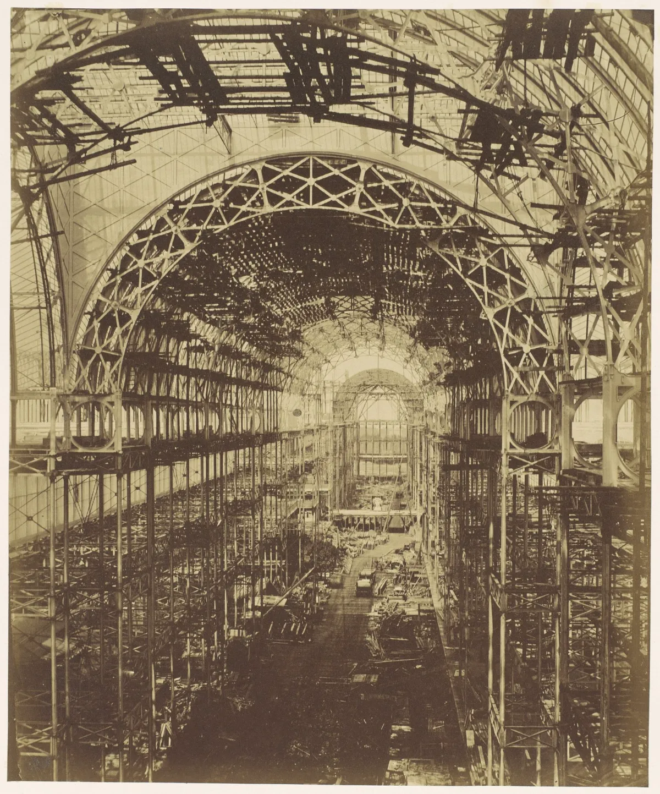

Architects working on period renovations and luxury extensions consistently specify steel for one defining visual quality: the crispness of narrow sightlines. This aesthetic lineage traces directly back to 19th-century wrought-iron glazing bars, where blacksmiths and ironfounders forged delicate T-sections and arched transoms capable of holding large panes of glass with minimal visual interruption.

Why Sightlines Matter in Heritage Architecture
In a conservatory or winter garden, the frame acts as a foreground filter between the interior room and the garden landscape. Thick timber or bulky uPVC mullions fragment the view and cast heavy shadows. By contrast, slim-profile steel sections—often under half the width of equivalent timber frames—create a fine graphic grid that frames greenery like a classical architectural drawing.
Upgrading Historic Craft with Modern Metallurgy
While 19th-century wrought iron relied on solid metal bars bedded in linseed putty, modern architectural steel conservatories retain that exact slender visual profile while upgrading every hidden engineering layer:
- Integrated Polyamide Thermal Breaks: Eliminating cold bridging while preserving narrow exterior and interior face widths.
- EPDM Compression Gaskets & Concealed Drainage: Replacing brittle putty with multi-decade weather seals and internal moisture channels.
- Custom Heritage Detailing: Combining precision CNC-cut structural steel with hand-crafted finials, spandrel brackets, and pointed or radial glazing bars.
Cast iron, wrought iron and steel
Victorian glasshouses used three ferrous metals, each with different properties. Cast iron was poured into moulds, making it ideal for columns, brackets and decorative pieces that could be repeated. It is strong in compression but brittle and weak in tension. Wrought iron was worked by hand or rolled, giving a tough, fibrous material that could carry tension and be bent into curves, as at Kew. Steel, produced in quantity from the later nineteenth century, combines strength and toughness with consistent quality and has replaced both for structural work today.
What the old glazing bars teach us
A Victorian glazing bar was often a simple T or cross section, just deep enough to span between supports and carry the glass on putty. Its slenderness is what gives old glasshouses their delicate appearance. Modern steel glazing systems aim for the same face widths while adding what the Victorians lacked: thermal breaks, gaskets, drainage channels and the ability to carry heavy insulated glass.
From drawing to frame
For each design, we start with the proportions in elevation and section, then select steel sections that achieve the desired face width while carrying the loads. On our Vaulted Steel Conservatory, the construction film shows the process clearly: base plates and column lines are set out, uprights are bolted and braced, and arched ribs are lifted in by crane and fixed one bay at a time, with scroll panels offered up between the ribs. Seeing the bare frame makes it clear how much of the finished building is determined by the steel.
Protecting steel for the long term
- Surface preparation: blast cleaning removes mill scale and rust and gives the coating a surface to grip.
- Corrosion protection: zinc-rich primers or galvanising protect the steel underneath the finish.
- Finish coat: polyester powder coating or a high-performance paint system gives the final colour.
- Detailing: avoiding water traps, sealing joints and providing drainage paths matter as much as the coating.
Where traditional craft still has a place
Structural frames are best made in modern steel, but decorative work can still use traditional methods. Hand-forged scrolls, cast finials and crestings add character, and they can be combined with laser-cut panels for repeated patterns. The best results come from deciding which elements deserve handwork and which can be precision-cut, so the budget goes where it will be seen.
Specifying for architects
When working with architects, we provide section drawings showing frame profiles and face widths, structural calculations, glazing specifications and details of abutments and bases. Early collaboration lets the steel be designed to suit the architecture, rather than adapted at the end. See our design studio for examples of our measured drawings, and compare frame materials in our steel, timber and uPVC guide.
Frequently asked questions
Why are steel sightlines narrower than aluminium or timber?
Steel possesses roughly three times the modulus of elasticity (stiffness) of aluminium and vastly greater structural strength than timber, allowing slimmer cross-sections to carry heavy double-glazed roof loads safely.
Can modern slim-sightline steel replicate historic putty-line glazing profiles?
Yes. Architectural steel systems can be specified with angled glazing beads that mimic the traditional chamfered look of historic hand-glazed ironwork.
Is wrought iron still used in modern conservatories?
Structural frames are engineered from high-grade architectural steel for dimensional accuracy and thermal break integration, while bespoke decorative scrollwork, crestings, and finials incorporate traditional wrought-iron craftsmanship.
How do architects specify bespoke steel conservatories for period projects?
Our engineering team collaborates directly with project architects, providing CAD section details, structural load calculations, and bespoke arch elevations tailored to the host building.